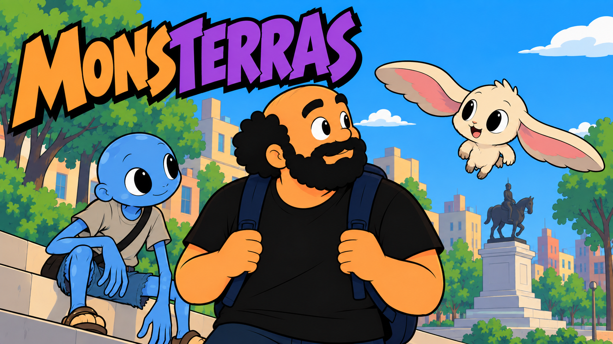
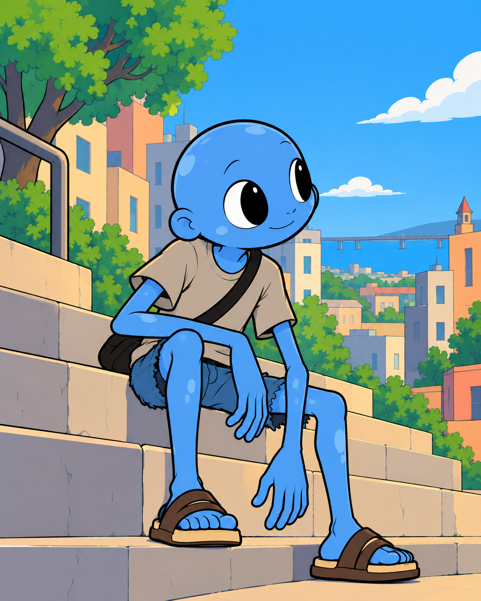

HUMANO
Mauro Sosa
Un trabajador de vida tranquila que, casi sin buscarlo, empieza a prestar atención a un mundo que siempre estuvo a su alrededor.

Un mundo donde humanos y criaturas comparten algo más que la ciudad.
Mauro Sosa lleva una vida cotidiana entre el trabajo, la ciudad y sus propias preocupaciones. Pero a su alrededor existen criaturas conocidas como Monsterras.
Un encuentro inesperado empieza a cambiar su forma de mirar lo que siempre estuvo a su alrededor: criaturas, aventureros, gimnasios y secretos que todavía están lejos de comprenderse por completo.
Leé la historia de MONSTERRAS desde el comienzo.
Algunos de los personajes que forman parte de MONSTERRAS.
Un trabajador de vida tranquila que, casi sin buscarlo, empieza a prestar atención a un mundo que siempre estuvo a su alrededor.

Curioso, tranquilo y resistente. Un Monsterra urbano de pocas necesidades, largos brazos y una particular forma de relacionarse con el mundo.
Líder del Gimnasio Centro. Seguro, carismático y bastante porfiado, tiene su propia manera de ver a los Monsterras y a quienes lo desafían.